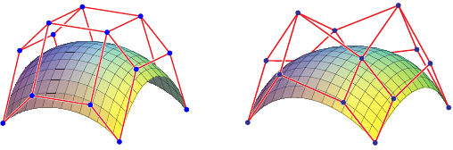
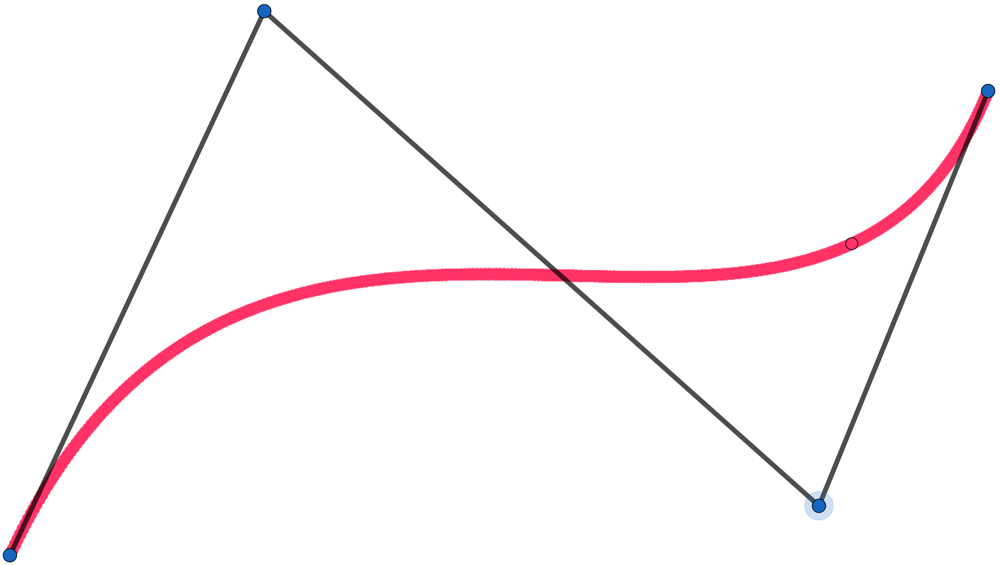
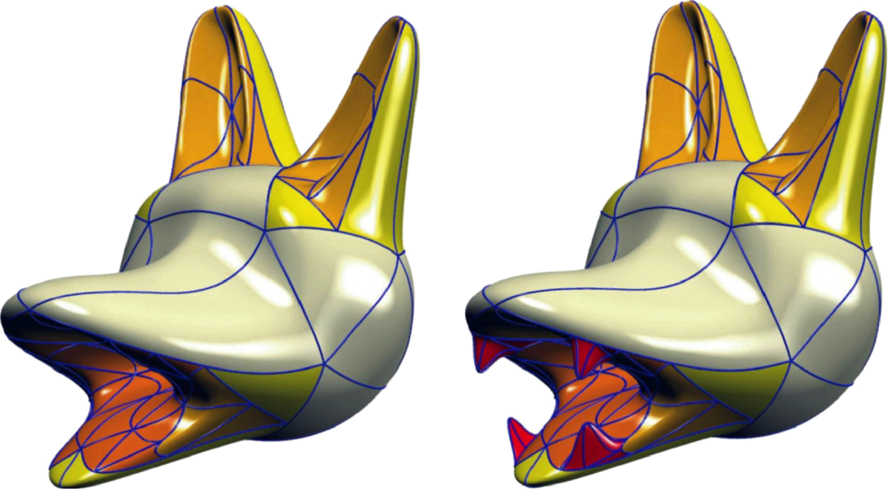
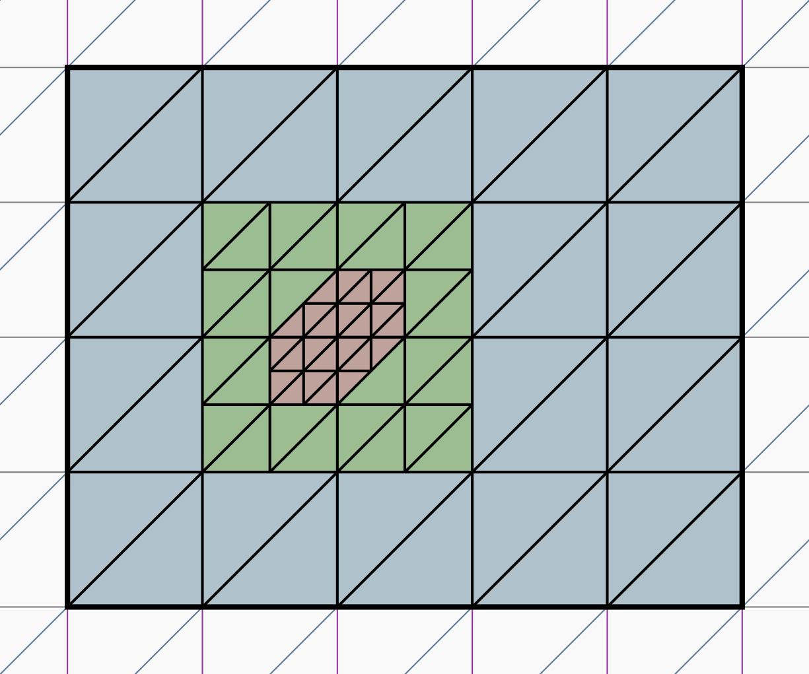
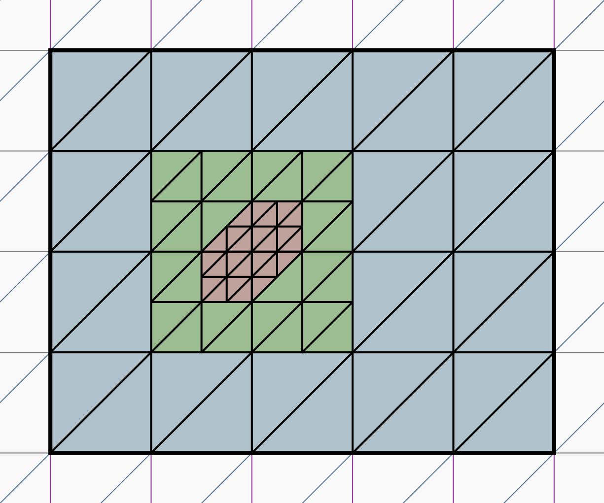
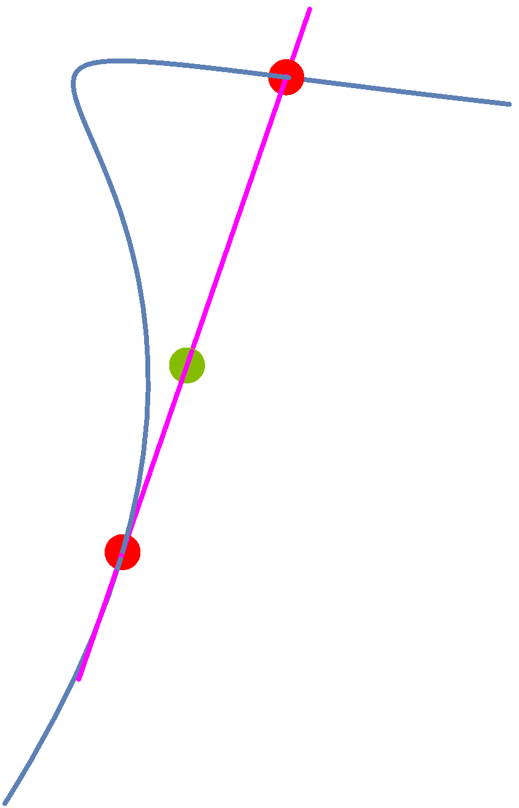
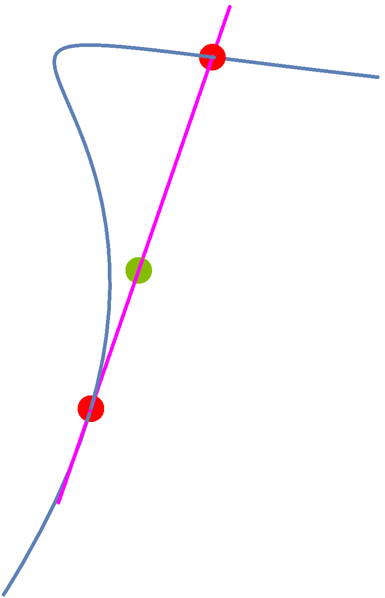
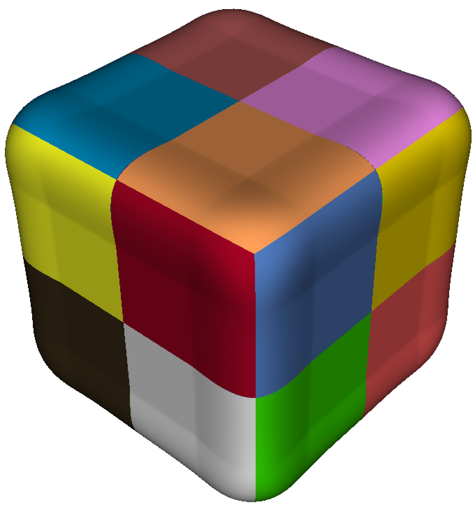
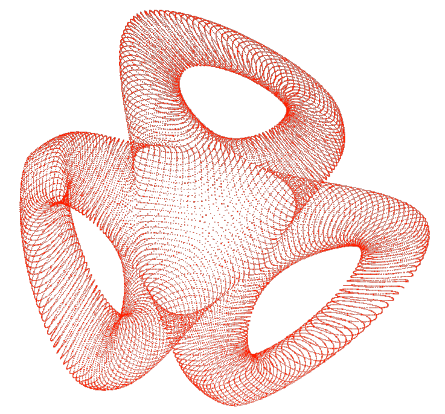
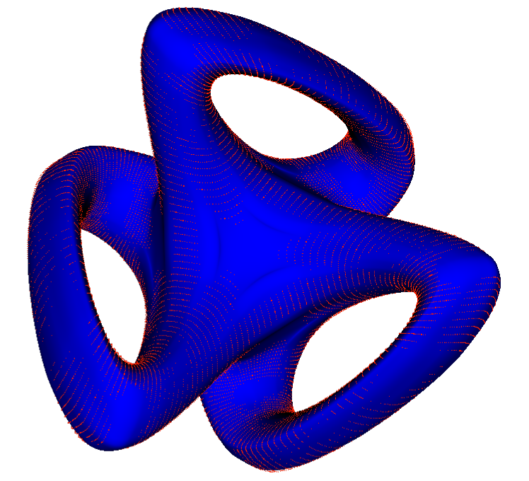

Algebraic Spline geometry: towards efficient shape representation
Dr. Nelly VillamizarDepartment of Mathematics, Swansea University
-
Faculty of Engineering and Science, Universidad Adolfo Ibáñez
December 22, 2020
Research Areas
● Effective methods to approximate data, computational shape design: ▪ Determine the most suitable partition of a domain to approximate a given data set. ▪ Construct a set of generating functions with good approximation properties that allow deformation.

● Characterise spaces with local refinements properties, implementation and CAGD applications. ● Develop methods for surfaces with complex topology, applications to fitting.

● Algorithmic construction of linkages following prescribed motions. ● Algebraic methods in optimal control.
Spline functions and applications


Discretization: FEM to solve PDE's


Computer Graphics CAGD CAD/CAM

Subdivision Surfaces

Isogeometric Analysis= CAGD + FEM
Hughes, Cottrell, and Bazilevs (2005)
Architectural geometry
Piecewise polynomial functions



Higher dimensional splines


 A pair of polynomials $(f,g)$ is $C^r$-continuous across a common face iff \[f - g = \ell^{r+1} h \Leftrightarrow f-g\in \langle \ell^{r+1}\rangle \]
Strang (1973) Billera (1998)
A pair of polynomials $(f,g)$ is $C^r$-continuous across a common face iff \[f - g = \ell^{r+1} h \Leftrightarrow f-g\in \langle \ell^{r+1}\rangle \]
Strang (1973) Billera (1998)
Dimension of spline spaces
Hierarchical box splines


 
N. Villamizar, A. Mantzaflaris, and B. Jüttler
📑 Characterization of hierarchical quartic box splines (2016)
📑 Completeness characterization of type-I box splines (2020)
D. Toshniwal and N. Villamizar
📑 Dimension of polynomial splines of mixed smoothness on T-meshes (2020)

N. Villamizar, A. Mantzaflaris, and B. Jüttler
📑 Characterization of hierarchical quartic box splines (2016)
📑 Completeness characterization of type-I box splines (2020)
D. Toshniwal and N. Villamizar
📑 Dimension of polynomial splines of mixed smoothness on T-meshes (2020)
Splines and fat point ideals
<<<<<<< HEAD$\ell=a x+b y+c z\quad \longleftrightarrow \quad P = [a :b:c]\in \mathbb{P}^ 2 $
=======$\ell=a x+b y+c z\quad \longleftrightarrow \quad P = [a :b:c]\in \mathbb{P}^ 2 $
>>>>>>> b8129d00c7cece56993ce1dc138217409e645ea3$\langle \ell_1^{r+1}, \cdots, \ell_m^{r+1}\rangle_d \quad \longleftrightarrow \quad \wp_1^{d-r}\cap\cdots\cap\wp_m^{d-r}$
 

Splines, Algebra, and Combinatorics


Splines, Algebra, and Combinatorics


Complex shape representation
<<<<<<< HEAD A. Blidia, B. Mourrain, and N. Villamizar 📑 $G^1$-splines on quad meshes with 4-split macro-patch elements (2017) 📑 Sheaf structure of geometrically continuous splines (in preparation) B. Mourrain, R. Vidunas, and N. Villamizar 📑 Dimension and bases for splines on surfaces of arbitrary topology (2016)
 Blidia, Mourrain, and Xu (2020) =======A. Blidia, B. Mourrain, and N. Villamizar 📑 $G^1$-splines on quad meshes with 4-split macro-patch elements (2017) 📑 Sheaf structure of geometrically continuous splines (in preparation) B. Mourrain, R. Vidunas, and N. Villamizar 📑 Dimension and bases for splines on surfaces of arbitrary topology (2016)
Blidia, Mourrain, and Xu (2020) >>>>>>> b8129d00c7cece56993ce1dc138217409e645ea3Rigidity and linkages
 <<<<<<< HEAD
=======
>>>>>>> b8129d00c7cece56993ce1dc138217409e645ea3
<<<<<<< HEAD
=======
>>>>>>> b8129d00c7cece56993ce1dc138217409e645ea3
<<<<<<< HEAD
=======
>>>>>>> b8129d00c7cece56993ce1dc138217409e645ea3
<<<<<<< HEAD
=======
>>>>>>> b8129d00c7cece56993ce1dc138217409e645ea3
Algebraic methods in optimal control
- Fundamental challenges in dynamic optimization such as pole placement, optimality conditions for model predictive control, and the parametrization of switching surfaces, can be cast as a system of algebraic equations.
- The aim is to develop effective methods to analyse polynomial systems by combining
- Efficient iterative methods in optimization
- Gröbner bases
- Sturm sequences.
Identification of switching curves


Improved optimal trajectories are obtained by studying the solvability of the polynomial system associated to the optimality conditions.
For $A,Q\in\mathbb{R}^{n\times n}\,,B\in \mathbb{R}^{n\times m}\,, R\in\mathbb{R}^{m\times m}$ solve for $X\in\mathbb{R}^{n\times n}$ : \[A^tX+X A-X BR^{-1}B^tX+Q=0\] Optimal feedback control: $u^*(x):=-(R^{-1}B^t X)x$ .
Future directions
- High order methods for computational engineering and data analysis British Council & French Embassy in UK Alliance Hubert Curien programme (2020-22)
-
Algebraic Spline Geometry: towards algorithmic shape representation
Principal Investigator, EPSRC New Investigator award (2021-24)
- Beyond multivariate spline spaces on planar partitions
- Geometric continuity methods for complex shapes
- Numerical algorithms for locally adaptive spline basis functions.
- Effective algebraic methods in optimal control.
Muchas gracias!!
Web: https://sites.google.com/site/nvillami